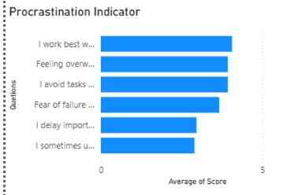
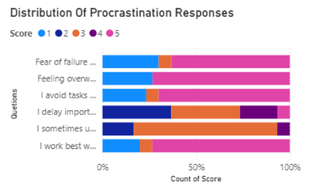
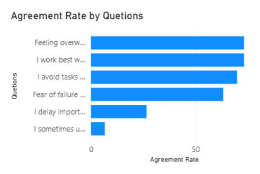

The Cost of Tomorrow
Understanding Procrastination Among Students

Hook
Most students know exactly what they should be doing.
The assignment is open.
The deadline is visible.
The task is important.
And yet, somehow, it doesn't get done.
Instead, there is one more video to watch.
One more scroll through social media.
One more promise that tomorrow will be different.
Procrastination is often described as poor time management or a lack of discipline. But for many students, the experience feels far more complicated than that.
The problem is rarely not knowing what to do.
The problem is facing everything that comes with doing it.
Fear of failure.
Fear of not being good enough.
Fear of discovering that the effort might not lead to the result they hoped for.
The question is not why students delay work.
The question is what they are delaying themselves from feeling.
Research Question
What factors contribute to procrastination among students, and how do emotions such as overwhelm, uncertainty, and fear influence academic behavior?
Methodology
To explore this question, a survey was conducted among 30 students using six procrastination-related indicators.
Students responded to statements on a five-point Likert scale ranging from Strongly Disagree (1) to Strongly Agree (5).
The survey examined behaviors such as delaying important work, avoiding difficult tasks, feeling overwhelmed, relying on deadlines for motivation, using entertainment as avoidance, and the influence of fear of failure.
Responses were analyzed and visualized using Power BI dashboards to identify patterns in procrastination habits and underlying emotional triggers.
Finding 1: Procrastination Often Begins With Overwhelm

Figure 1. Procrastination Indicators
One of the strongest findings from the survey was the relationship between feeling overwhelmed and postponing work.
Students frequently reported delaying tasks when responsibilities felt too large, uncertain, or difficult to manage.
This finding challenges a common assumption.
Many people imagine procrastination as choosing leisure over productivity.
The data suggests something different.
Students are not necessarily avoiding work because they do not care.
They may be avoiding work because they care so much that the task feels intimidating.
When an assignment appears too large, the easiest short-term solution is avoidance.
The relief is temporary.
The stress remains.
And tomorrow's work becomes tomorrow's problem.
Finding 2: Avoidance Is Often Driven by Fear

Figure 2. Agreement Rate by Questions
The survey also revealed strong agreement with statements connecting procrastination to uncertainty and fear of failure.
This is important because fear rarely looks like fear.
Sometimes it looks like delay.
Students may postpone work not because they expect failure, but because beginning the task forces them to confront the possibility of failure.
As long as the work remains unfinished, the outcome remains unknown.
In a strange way, procrastination becomes a form of emotional protection.
The unfinished task preserves hope.
Once the task is attempted, the uncertainty becomes real.
The data suggests that procrastination is often less about poor habits and more about uncomfortable emotions that students struggle to confront directly.
Finding 3: Deadlines Create Urgency That Motivation Cannot

Figure 3. Distribution of Procrastination Responses
One of the most revealing findings was that many students reported working best when deadlines are close.
This pattern is familiar to almost every student.
Days of avoidance are followed by hours of intense productivity.
The approaching deadline creates something that motivation often cannot.
Urgency.
When the consequences become immediate, action finally feels unavoidable.
The problem is that this cycle comes with costs.
Students experience higher stress, lower sleep quality, and greater anxiety while attempting to complete important work under pressure.
The deadline solves the problem temporarily.
But it does not solve the reasons the problem existed in the first place.
Student Voices
Although their experiences differ, a common theme emerges: procrastination is rarely a simple issue of laziness.
More often, it reflects a struggle with uncertainty, fear, and the pressure students place on themselves.
The work is postponed.
But the emotions behind it remain.
Analysis and Interpretation
The story emerging from the data is not about poor time management.
It is about emotional management.
Students frequently understand what needs to be done. They recognize deadlines, acknowledge responsibilities, and understand the consequences of delay.
Yet awareness alone does not guarantee action.
The findings suggest that procrastination often functions as a short-term strategy for reducing discomfort.
The task remains untouched.
The anxiety temporarily disappears.
Unfortunately, the relief is temporary.
As deadlines approach, the same anxiety returns— often stronger than before.
The challenge for students may not be learning how to manage their time.
It may be learning how to manage the emotions that make difficult work feel overwhelming in the first place.
Conclusion
The findings suggest that procrastination is a common experience among students, driven by more than simple delay or lack of discipline.
Students reported postponing important work despite understanding its importance, particularly when tasks felt overwhelming, uncertain, or emotionally difficult.
Fear of failure and deadline dependence emerged as significant themes throughout the data.
The most important finding is not that students procrastinate.
It is why they procrastinate.
For many students, procrastination appears to be less about avoiding work and more about avoiding the emotions attached to that work.
The challenge is not simply starting earlier. It is learning how to face uncertainty, discomfort, and fear without allowing tomorrow to carry the weight of today.